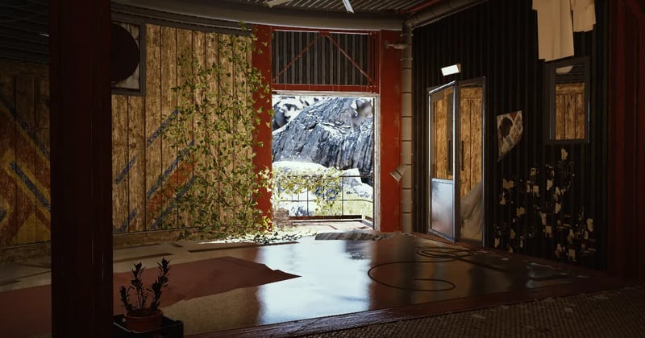

Outpost
The Outpost is your second base. Its real job is the Research Station, the road to Amplified Level V guns. It also gives you extra storage through furniture. Here's the full path, what every step costs, which room to build where, and a layout that frees up the most stash space.
Unlock: Sheltered Retreat
Build order
The Research Station can never be a higher level than your Outpost, so alternate: room, station, room, station.
Rooms: which goes where
The short answer
All four room modules are the same in game terms. Each has 22 furniture slots and one wall spot for a weapon rack. They only differ in looks, so pick the ones you like.
Choices are permanent. You can't swap a room module after it's built.

Base room
- Furniture
- 42 slots
- Stations
- 8 slots
- Weapon racks
- 6 wall spots (4 grouped, 2 in the bedroom area; one is easy to miss)
- Doors
- 2, for modules
Our pick
- Room 2: Chalet, the coziest.
- Room 3: Panoramic, one big open floor that's easy to arrange.
- Room 4: Studious, the big round hall with a skylight. It's reported to appear only for the last expansion, so leave that slot for it.
Timeless works too. Players like its ladder loft, but its small sub-rooms are harder to fill.
| Room | Look and feel | Available as |
|---|
| Expansion | Materials | Unlocks |
|---|
Research Station
| Level | Materials |
|---|
Research Points (RP)
You earn RP by studying Research Items at the station. Don't study the ones the next station level needs: Paperbacks (I), Raider Logbooks (II), Exodus Handbooks (III) and ARC Data Modules (IV).
| Item | RP |
|---|
What research gets you
- Blueprints you haven't found yet (e.g. Bantam, Barricade Kit, some attachments)
- Furniture designs (storage shelves at level II)
- Amplified Research, which some Level V weapon options need
Storage layout
Weapon-heavy layout (36 guns)
Put a Sturdy Weapon Rack (4 guns, 10 Sheet Metal) on every rack wall: 6 in the base room plus 1 per module = 9 racks, 36 guns out of your stash.
Players report hitting 60 by moving loaded racks into Furniture Storage, but that's an unofficial trick and some report guns disappearing. Only store spare guns that way.
Balanced layout
Start with 2 Sturdy Weapon Racks and 1 Sturdy Shelf (24 slots). That's 8 guns and 24 trinkets. Add a Diner Cupboard (16) on a big floor spot and a Warehouse Dresser (5) on a small one.
Rules
- Furniture slots are extra to your 328-slot stash, but only for eligible items: guns, trinkets and Scrappy food. Not ammo, keys or most materials.
- Assign items with Decorate on the furniture piece.
- Build storage first, decorate last. Furniture uses the same Planks and Sheet Metal as room upgrades.
| Furniture | Holds | Cost | How to get the design |
|---|
Sources: ARC Raiders Wiki Outpost and Workshop pages, ARC Tracker room data, MMOExp's Outpost storage guide (Oct 19, 2026), LepreStore's Outpost and Research Station guide (Oct 26, 2026), and AOEAH room descriptions. Studious being final-room-only is reported, not confirmed.